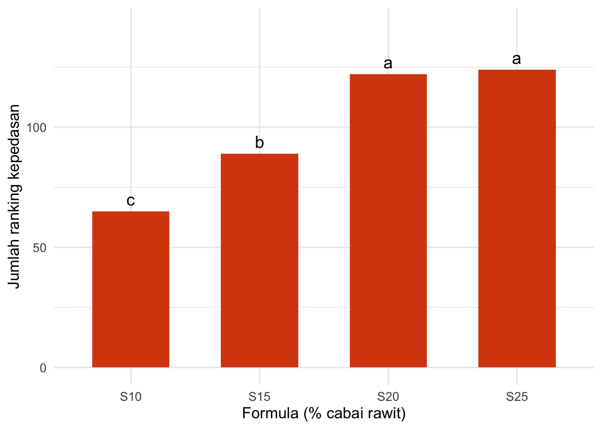
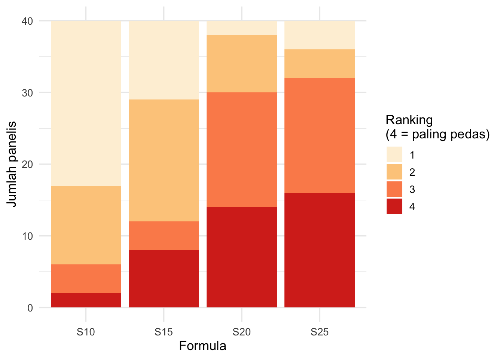

sambal <- read.csv("data/kasus2_ranking_sambal.csv", check.names = FALSE)
head(sambal)Kasus 2 · Uji Ranking Sederhana
Menentukan level kepedasan sambal bawang
Cerita kasus
Sebuah UMKM sambal bawang di Bantul ingin menjual sambalnya dalam beberapa level kepedasan di kemasan. Mereka membuat empat formula dengan kadar cabai rawit berbeda:
| Kode sampel | Formula | Cabai rawit |
|---|---|---|
| 381 | S10 | 10% |
| 527 | S15 | 15% |
| 649 | S20 | 20% |
| 812 | S25 | 25% |
Cabai rawit sedang mahal, jadi pemilik usaha bertanya: “Apakah konsumen benar-benar merasakan bedanya? Formula mana yang layak dijadikan level berbeda?”
Tujuan uji: mengurutkan keempat formula berdasarkan kepedasan yang dirasakan konsumen dan menentukan formula mana yang berbeda nyata.
Desain uji
- 40 konsumen menerima keempat sampel sekaligus dengan urutan acak dan seimbang.
- Instruksi: “Urutkan sampel berdasarkan kepedasan. Beri angka 1 untuk yang paling tidak pedas dan 4 untuk yang paling pedas. Tidak boleh ada nilai yang sama.”
- Pada lembar uji yang sama, panelis juga mengurutkan aroma bawang goreng (dipakai di Tantangan).
Ini adalah uji ranking sederhana (Meilgaard dkk., Bagian 8.6). Desainnya adalah randomized complete block: setiap panelis = satu blok, dan setiap blok berisi semua sampel.
Langkah 1 — Membaca data
check.names = FALSE menjaga nama kolom tetap seperti aslinya (misalnya Kepedasan [Sampel 381]). Tanpa itu, R akan mengubah spasi dan tanda kurung menjadi titik.
Langkah 2 — Cek kualitas data
Setiap panelis harus memberi ranking 1, 2, 3, dan 4 masing-masing satu kali, sehingga jumlahnya selalu 1 + 2 + 3 + 4 = 10.
kolom_pedas <- grep("Kepedasan", names(sambal))
table(rowSums(sambal[, kolom_pedas]))
10
40 Semua 40 panelis memiliki jumlah 10 ✔️
Langkah 3 — Ubah ke format panjang (long format)
Data ini berbentuk lebar (satu baris = satu panelis). Fungsi analisis membutuhkan bentuk panjang (satu baris = satu panelis × satu sampel).
pedas <- sambal %>%
pivot_longer(cols = starts_with("Kepedasan"),
names_to = "kode",
names_pattern = "\\[Sampel (\\d+)\\]",
values_to = "rank") %>%
mutate(formula = recode(kode, "381" = "S10", "527" = "S15",
"649" = "S20", "812" = "S25")) %>%
select(panelis = `Kode Panelis`, kode, formula, rank)
head(pedas, 8)Langkah 4 — Jumlah ranking (rank sum)
pedas %>%
group_by(formula) %>%
summarise(jumlah_rank = sum(rank),
rata_rank = mean(rank))Semakin besar jumlah ranking, semakin pedas sampel tersebut menurut panelis.
Langkah 5 — Uji Friedman
- H₀: keempat formula memiliki kepedasan yang sama.
- H₁: setidaknya satu formula berbeda.
friedman.test(rank ~ formula | panelis, data = pedas)
Friedman rank sum test
data: rank and formula and panelis
Friedman chi-squared = 36.09, df = 3, p-value = 7.167e-08Nilai p sangat kecil → ada perbedaan kepedasan di antara formula. Tetapi formula mana yang berbeda?
Langkah 6 — Uji lanjut dengan friedman()
Fungsi friedman() dari library agricolae melakukan uji Friedman dan uji lanjut sekaligus, lengkap dengan huruf notasi.
hasil_pedas <- with(pedas,
friedman(judge = panelis, trt = formula, evaluation = rank,
alpha = 0.05, group = TRUE, console = TRUE))
Study: rank ~ panelis + formula
formula, Sum of the ranks
rank r
S10 65 40
S15 89 40
S20 122 40
S25 124 40
Friedman's Test
===============
Adjusted for ties
Critical Value: 36.09
P.Value Chisq: 7.167353e-08
F Value: 16.77404
P.Value F: 3.955083e-09
Post Hoc Analysis
Alpha: 0.05 ; DF Error: 117
t-Student: 1.980448
LSD: 19.3663
Treatments with the same letter are not significantly different.
Sum of ranks groups
S25 124 a
S20 122 a
S15 89 b
S10 65 cBagian terpenting:
hasil_pedas$groupsFormula dengan huruf yang sama tidak berbeda nyata.
CatatanCatatan tentang LSD
agricolae memakai LSD berbasis distribusi t (metode Conover). Buku Meilgaard memakai LSDrank = 1,96 × √(b·t·(t+1)/6). Kedua cara biasanya memberi kesimpulan yang serupa. Coba bandingkan di Tantangan 2.4.
Langkah 7 — Visualisasi
grup <- hasil_pedas$groups %>%
tibble::rownames_to_column("formula") %>%
rename(jumlah_rank = `Sum of ranks`)
ggplot(grup, aes(x = formula, y = jumlah_rank)) +
geom_col(fill = "#d9480f", width = 0.6) +
geom_text(aes(label = groups), vjust = -0.5, size = 5) +
labs(x = "Formula (% cabai rawit)", y = "Jumlah ranking kepedasan") +
ylim(0, max(grup$jumlah_rank) * 1.15) +
theme_minimal(base_size = 13)
Interpretasi
- S10 < S15 < S20: setiap kenaikan cabai dari 10% → 15% → 20% dirasakan nyata lebih pedas.
- S20 dan S25 tidak berbeda nyata: menambah cabai dari 20% ke 25% tidak membuat konsumen merasa lebih pedas.
Rekomendasi: gunakan tiga buah level, yaitu Level 1 (S10), Level 2 (S15), Level 3 (S20). Formula S25 tidak perlu diproduksi karena lebih mahal tanpa tambahan kepedasan yang dapat dirasakan panelis.
Tantangan
Tantangan 2.1: Aroma bawang goreng
Pada lembar uji yang sama, panelis juga mengurutkan aroma bawang goreng (1 = paling lemah, 4 = paling kuat). Kolomnya diawali Aroma bawang goreng.
- Cek kualitas datanya (Langkah 2).
- Lakukan uji Friedman dan uji lanjut dengan
friedman. - Formula mana yang aromanya nyata paling lemah? Apa dugaan kalian tentang penyebabnya?
TipLihat jawaban
kolom_aroma <- grep("Aroma", names(sambal))
table(rowSums(sambal[, kolom_aroma]))
aroma <- sambal %>%
pivot_longer(cols = starts_with("Aroma"),
names_to = "kode",
names_pattern = "\\[Sampel (\\d+)\\]",
values_to = "rank") %>%
mutate(formula = recode(kode, "381" = "S10", "527" = "S15",
"649" = "S20", "812" = "S25")) %>%
select(panelis = `Kode Panelis`, formula, rank)
friedman.test(rank ~ formula | panelis, data = aroma)
hasil_aroma <- with(aroma, friedman(panelis, formula, rank, group = TRUE))
hasil_aroma$groupsTantangan 2.2: Rekomendasi akhir
Gabungkan hasil kepedasan (Langkah 6) dan aroma (Tantangan 2.1). Apakah rekomendasi “tiga level: S10, S15, S20” tetap masuk akal? Tulis rekomendasi untuk pemilik UMKM dalam maksimal 5 kalimat.
Tantangan 2.3: Grafik sebaran ranking
Jumlah ranking menyembunyikan informasi: dua sampel dengan jumlah ranking sama bisa memiliki pola jawaban berbeda. Buat grafik batang bertumpuk (stacked bar) yang menunjukkan berapa panelis yang memberi ranking 1, 2, 3, dan 4 untuk setiap formula (kepedasan).
Petunjuk: count() lalu geom_col(); ubah rank menjadi factor agar warnanya terpisah.
TipLihat jawaban
pedas <- sambal %>%
pivot_longer(cols = starts_with("Kepedasan"),
names_to = "kode",
names_pattern = "\\[Sampel (\\d+)\\]",
values_to = "rank") %>%
mutate(formula = recode(kode, "381" = "S10", "527" = "S15",
"649" = "S20", "812" = "S25")) %>%
select(panelis = `Kode Panelis`, formula, rank)
pedas %>%
count(formula, rank) %>%
ggplot(aes(x = formula, y = n, fill = factor(rank))) +
geom_col() +
scale_fill_brewer(palette = "OrRd", name = "Ranking\n(4 = paling pedas)") +
labs(x = "Formula", y = "Jumlah panelis") +
theme_minimal(base_size = 13)
Tantangan 2.4: LSD versi buku
Hitung LSDrank versi Meilgaard (Persamaan 14.15): LSDrank = 1,96 × √(b · t · (t + 1) / 6), dengan b = jumlah panelis dan t = jumlah sampel.
- Berapa nilainya untuk data kepedasan?
- Bandingkan dengan LSD dari
agricolae(lihathasil_pedas$statistics). - Apakah kesimpulan pasangan formula yang berbeda nyata berubah?
TipLihat jawaban
b <- 40; t <- 4
lsd_buku <- 1.96 * sqrt(b * t * (t + 1) / 6)
lsd_buku
hasil_pedas <- with(pedas, friedman(panelis, formula, rank, group = TRUE))
hasil_pedas$statistics
hasil_pedas$groups